Ajourné Interval Palette · M05 information-first remediation
The thirteen interval sheets
IPV-10…IPV-22 map one-to-one to source IP-00…IP-12 (IPV-10 = IP-00). Same sheet grammar every time: identity, exact keys, melodic vs harmonic, Plogger lens, neighbours.
IPV-10 · source IP-00 · identity #76848C
Perfect unison (P1)
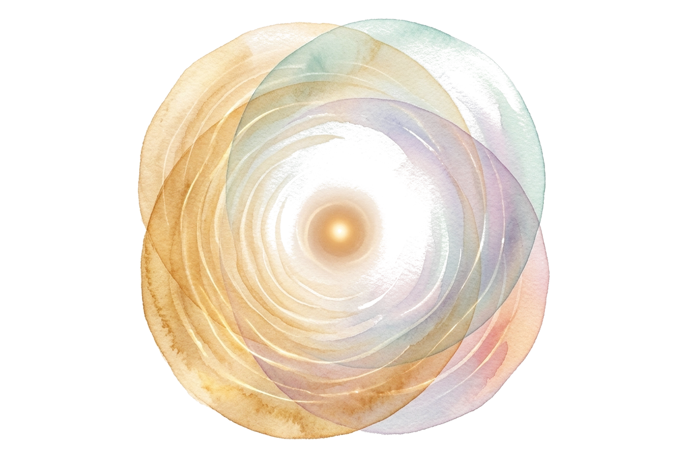
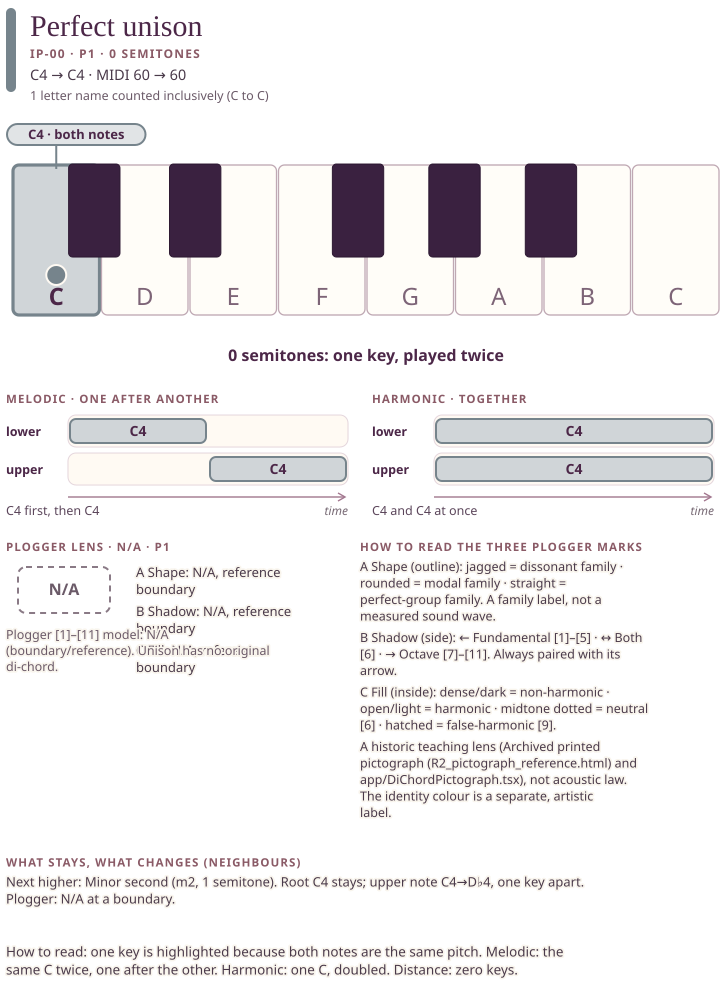
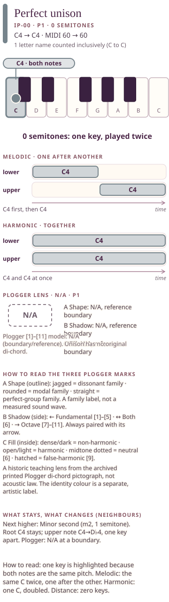
How to read it. One key is highlighted because both notes are C4. Melodic: the same note twice in a row. Harmonic: one note doubled. Distance: zero keys. Plogger is N/A at the boundary.
On your own keyboard. Play C, then C again, then two Cs together (use both hands or two octaves of C if you like).
Same pitch, same register. Voices may still differ in timbre.
Full source-authored chapter text (retained unchanged)
Meet the interval
A unison puts two pitches on exactly the same keyboard position and in the same register. It can be played by one instrument twice or by two voices together.
As a moving melody
Repeat C4 twice: there is no pitch movement, yet timing, length and articulation can make repetition meaningful. Silence between two C notes can be the whole phrase.
Two notes together
Two simultaneous Cs can reinforce each other. If their patches differ, you might hear multiple layers; if one is slightly detuned, you may hear beats, but the nominal written pitch is still C.
In actual music
Use for doubling a line, reinforcing an arrival, focusing an entrance, building a wide-sounding timbral stack from a single pitch, or returning to a clear starting point.
Listen and create
Compare one C4, two identical C4 oscillators, then C4 in two different patches. Identify which differences are from pitch and which from timbre.
Paint What You Hear
Put one mark on a sheet, then overlay a second mark in a different texture. How does one place become richer?
Keep in mind
C4 with C5 is an octave, not unison; a fixed-pitch label does not imply the two sound sources have identical timbre.
Actions
Hear together · Hear as a melody · Change register · Compare · Add to my soundscape (means copy note recipe, not send a DAW command).
IPV-11 · source IP-01 · identity #C25562
Minor second (m2)
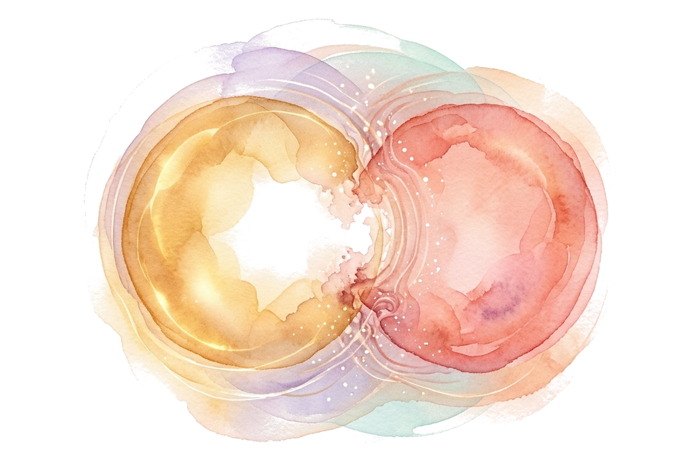
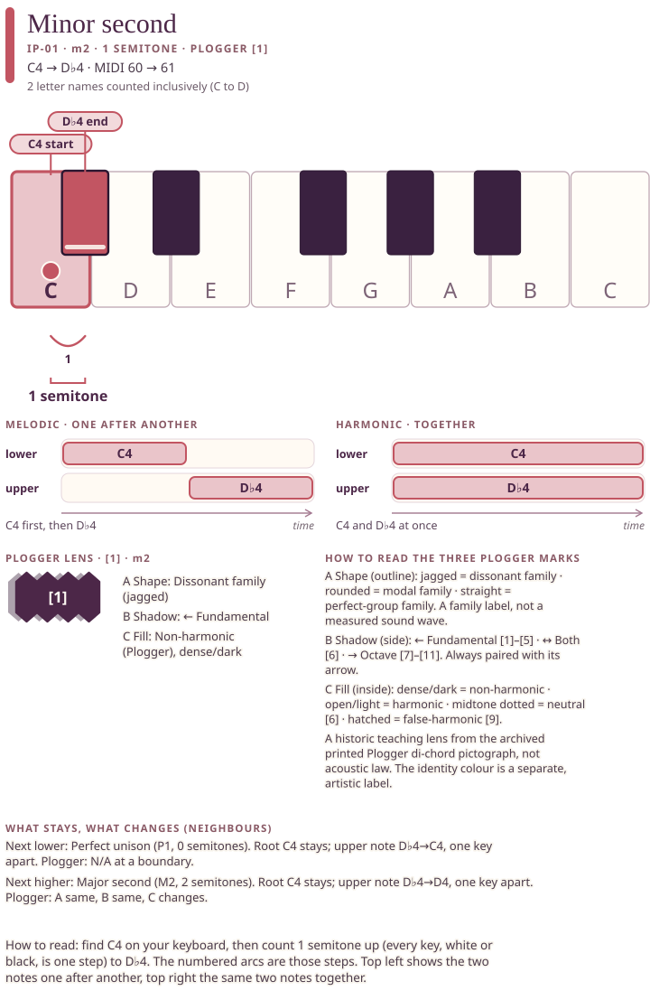
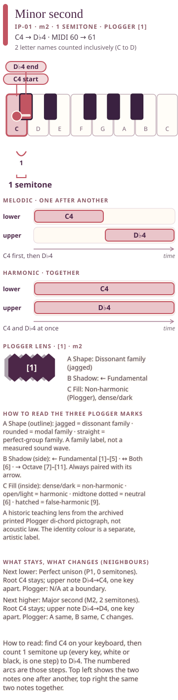
How to read it. Find C4 and count 1 keys up (white and black) to D♭4. The numbered arcs are those hops. The two time strips show the same two notes one after another (melodic) and together (harmonic). The three Plogger marks are a secondary historic lens.
On your own keyboard. Play C4, then D♭4, one after another, then together. Count the keys yourself, then notice what you hear without judging it good or bad.
Full source-authored chapter text (retained unchanged)
Meet the interval
One semitone is the smallest neighboring pitch step on our standard keyboard. C4 and D-flat4 are one key apart; their conventional interval name is minor second.
As a moving melody
Play C then D-flat slowly. A little step can be heard as a lean, a sigh, a passing color, an interruption, or simply the next part of a phrase.
Two notes together
Play both together. With rich spectra, their nearby partials may make a rough or beating texture; with soft, simple patches and careful register, the result may feel delicate rather than harsh.
In actual music
Try chromatic neighbor figures, close clusters, gentle instability, a soft passing motion, or a small pitch change that transforms a larger pad.
Listen and create
Compare C4/D-flat4 together and in sequence. Repeat with the same pair higher up, then with a different synth patch.
Paint What You Hear
Place two colored lines almost touching; let the edges be blurry or sharp according to what you hear.
Keep in mind
A minor second is not an obligatory fear cue; perceived roughness depends on the actual sound and listening context.
Actions
Hear together · Hear as a melody · Change register · Compare · Add to my soundscape (means copy note recipe, not send a DAW command).
IPV-12 · source IP-02 · identity #C17D41
Major second (M2)
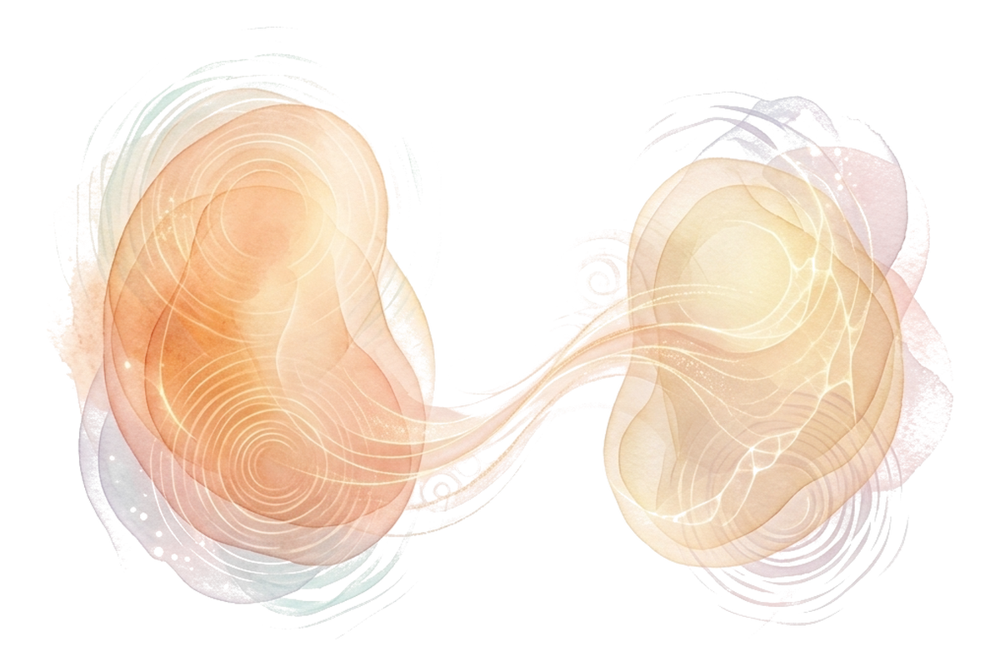
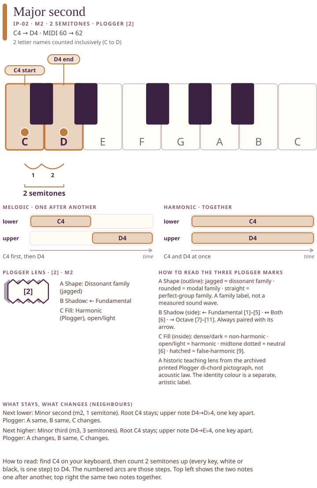
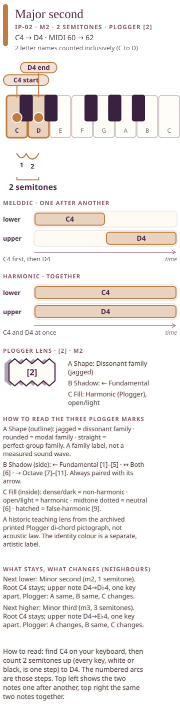
How to read it. Find C4 and count 2 keys up (white and black) to D4. The numbered arcs are those hops. The two time strips show the same two notes one after another (melodic) and together (harmonic). The three Plogger marks are a secondary historic lens.
On your own keyboard. Play C4, then D4, one after another, then together. Count the keys yourself, then notice what you hear without judging it good or bad.
Full source-authored chapter text (retained unchanged)
Meet the interval
A major second is a whole step. From C to D you cross two neighboring-key movements, including the black-key position C-sharp in between.
As a moving melody
C to D is a common move in melodies. It can move a phrase forward, answer a question or hover without demanding that another note follow.
Two notes together
Sustain C and D together. The combination can be heard as a close dyad, a suspended chord color or a gentle cluster depending on its register, envelope and supporting bass.
In actual music
Use in walking contours, neighboring-note motifs, slow evolving pads and gentle phrases that change one small step at a time.
Listen and create
Play C→D as a melody, then C+D together. Compare D→E, another major second, using exactly the same patch and timing.
Paint What You Hear
Draw a second mark a little farther away than for a semitone and leave the space between them visible.
Keep in mind
Not every neighboring pair of white keys is a major second: E–F and B–C are a semitone apart.
Actions
Hear together · Hear as a melody · Change register · Compare · Add to my soundscape (means copy note recipe, not send a DAW command).
IPV-13 · source IP-03 · identity #8964A4
Minor third (m3)
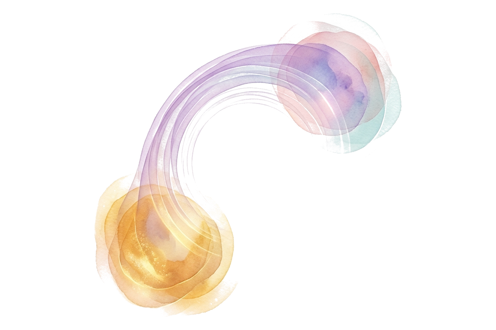
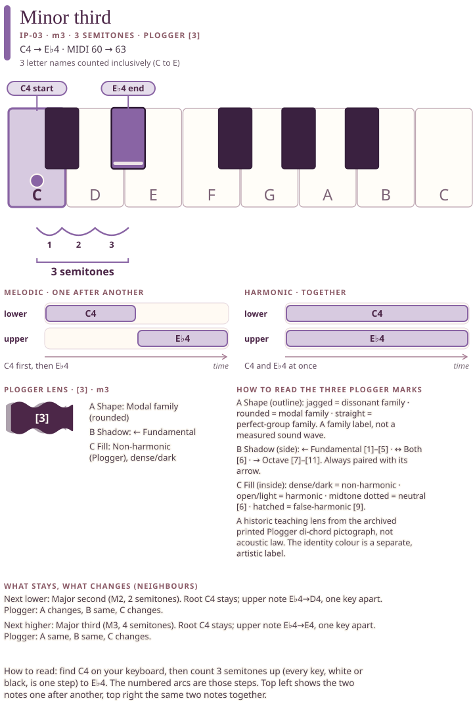
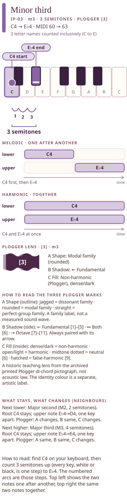
How to read it. Find C4 and count 3 keys up (white and black) to E♭4. The numbered arcs are those hops. The two time strips show the same two notes one after another (melodic) and together (harmonic). The three Plogger marks are a secondary historic lens.
On your own keyboard. Play C4, then E♭4, one after another, then together. Count the keys yourself, then notice what you hear without judging it good or bad.
Full source-authored chapter text (retained unchanged)
Meet the interval
C to E-flat counts as a third by letters C–D–E, and measures three semitones. This is a minor third, different from the four-semitone major third.
As a moving melody
The minor-third skip can sound lyrical, playful, reflective or dramatic depending on its rhythm and what follows. The listener hears a jump over the adjacent letter position.
Two notes together
The pair is a common component of minor-triad harmony when a fifth is added. As an isolated two-note sound, it does not by itself determine the key or the emotional narrative.
In actual music
Use in motif shapes, small singing leaps, warm pad dyads and minor-triad construction later in the course.
Listen and create
Keep C fixed and compare upper E-flat to E-natural. Then compare E4–G4, another minor third starting elsewhere.
Paint What You Hear
Draw one low point with two alternative upper points spaced three and four semitones away on a stylized keyboard.
Keep in mind
Minor is a precise name of quality and size; it is not a rule that the music must sound sad.
Actions
Hear together · Hear as a melody · Change register · Compare · Add to my soundscape (means copy note recipe, not send a DAW command).
IPV-14 · source IP-04 · identity #AB812D
Major third (M3)
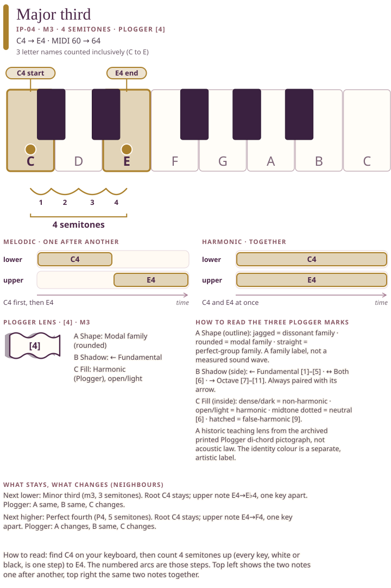
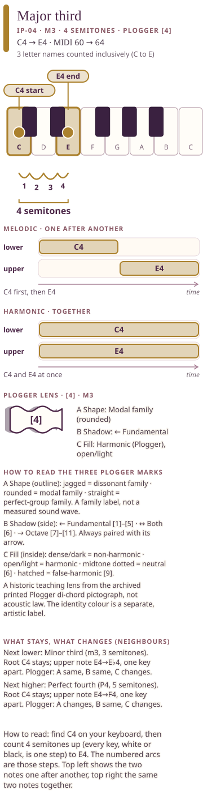
How to read it. Find C4 and count 4 keys up (white and black) to E4. The numbered arcs are those hops. The two time strips show the same two notes one after another (melodic) and together (harmonic). The three Plogger marks are a secondary historic lens.
On your own keyboard. Play C4, then E4, one after another, then together. Count the keys yourself, then notice what you hear without judging it good or bad.
Full source-authored chapter text (retained unchanged)
Meet the interval
Count C–D–E inclusively to find a third. Count chromatic movements from C to E to find four semitones. Together those facts name a major third.
As a moving melody
From C to E is a small leap that can be a call, a beginning gesture or a high point; singing and tracing it can make its size familiar.
Two notes together
Together the notes form a clear two-note sonority in many familiar tonal settings. If G is added, C–E–G forms a C-major triad; without G, call it a dyad.
In actual music
Use to begin major-chord thinking, write memorable motifs, design glowing pad colors and compare two independent voice positions.
Listen and create
In Lesson 2A hold C4 and shift E4 up to F4. The measured interval changes from four to five semitones.
Paint What You Hear
Hold a lower shape in place and move just one upper mark; notice if your visual impression changes.
Keep in mind
A four-semitone major third is not scientifically guaranteed to sound happy, radiant or emotionally stable.
Actions
Hear together · Hear as a melody · Change register · Compare · Add to my soundscape (means copy note recipe, not send a DAW command).
IPV-15 · source IP-05 · identity #4F816B
Perfect fourth (P4)
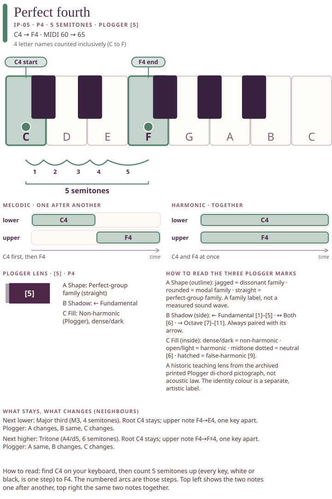
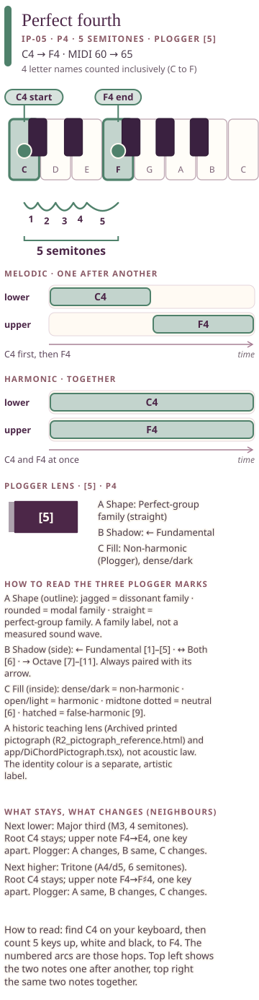
How to read it. Find C4 and count 5 keys up (white and black) to F4. The numbered arcs are those hops. The two time strips show the same two notes one after another (melodic) and together (harmonic). The three Plogger marks are a secondary historic lens.
On your own keyboard. Play C4, then F4, one after another, then together. Count the keys yourself, then notice what you hear without judging it good or bad.
Full source-authored chapter text (retained unchanged)
Meet the interval
A perfect fourth spans four letter positions from C through F and five semitones. The word perfect names an interval-quality family, not how good the sound is.
As a moving melody
C to F can be a recognizable reach or response. You can sing or trace it gently, sharply or in an entirely different phrase character.
Two notes together
C and F together can form a spacious sonority. A fourth above a bass may act like a suspension in common-practice tonal music but can remain a desired stable color in other musical contexts.
In actual music
Use in open drones, suspended textures, melodic calls and the Week 2A transformation from C–E to C–F.
Listen and create
Hear C4–F4 and B3–E4: both are five-semitone perfect fourths. Keep the same timbre and listen for contextual differences.
Paint What You Hear
Draw a broad open space between two marks, then bring them closer. Does your painting follow your hearing?
Keep in mind
The same perfect fourth need not feel equally stable or tense over every bass note.
Actions
Hear together · Hear as a melody · Change register · Compare · Add to my soundscape (means copy note recipe, not send a DAW command).
IPV-16 · source IP-06 · identity #5366A0
Tritone (A4/d5)
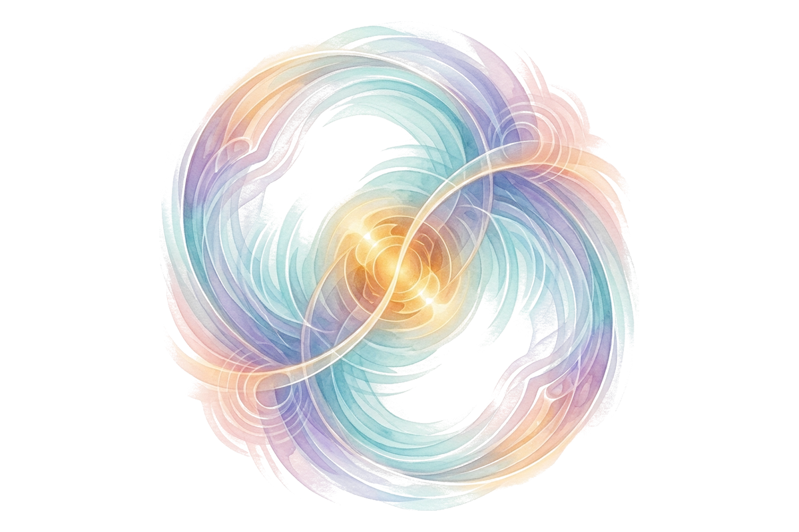
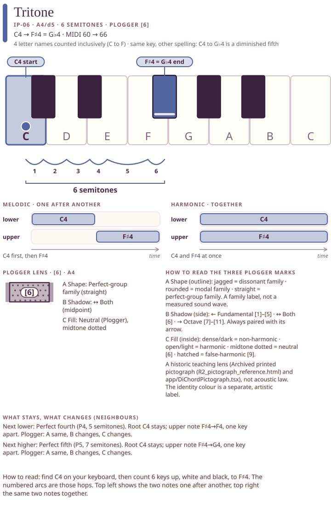
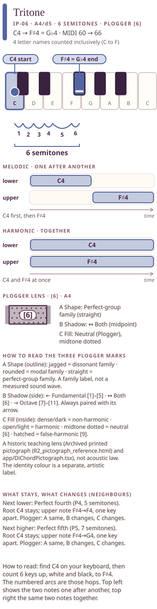
How to read it. Find C4 and count 6 keys up (white and black) to F♯4. The numbered arcs are those hops. The two time strips show the same two notes one after another (melodic) and together (harmonic). The three Plogger marks are a secondary historic lens.
On your own keyboard. Play C4, then F♯4, one after another, then together. Count the keys yourself, then notice what you hear without judging it good or bad.
Full source-authored chapter text (retained unchanged)
Meet the interval
A tritone covers six semitones, half the twelve-step equal-tempered octave. C to F-sharp is an augmented fourth by letters, while C to G-flat is a diminished fifth; in equal temperament they can sound identical.
As a moving melody
A tritone leap can stand out as an unexpected movement or become a familiar feature of an original melodic vocabulary.
Two notes together
The pair often has a distinct, restless presence in Western tonal contexts and appears among important voices of dominant-seventh chords. In ambient writing you may let it hover or fade without resolving.
In actual music
Try contrast, suspended atmosphere, chromatic color, altered harmony or deliberate voice-leading paths. Week 2B uses B3–F4, spelled a diminished fifth.
Listen and create
Compare C4–F-sharp4 with B3–F4. Both are six semitones, but the conventional spelled intervals are augmented fourth and diminished fifth.
Paint What You Hear
Mark a midpoint of an octave and draw two contrasting shapes on either side, without assigning the interval an automatic sinister story.
Keep in mind
No universal tritone emotion or fixed interference-beat rate exists. The historical devil-interval cliché is not our learning rule.
Actions
Hear together · Hear as a melody · Change register · Compare · Add to my soundscape (means copy note recipe, not send a DAW command).
IPV-17 · source IP-07 · identity #347B97
Perfect fifth (P5)
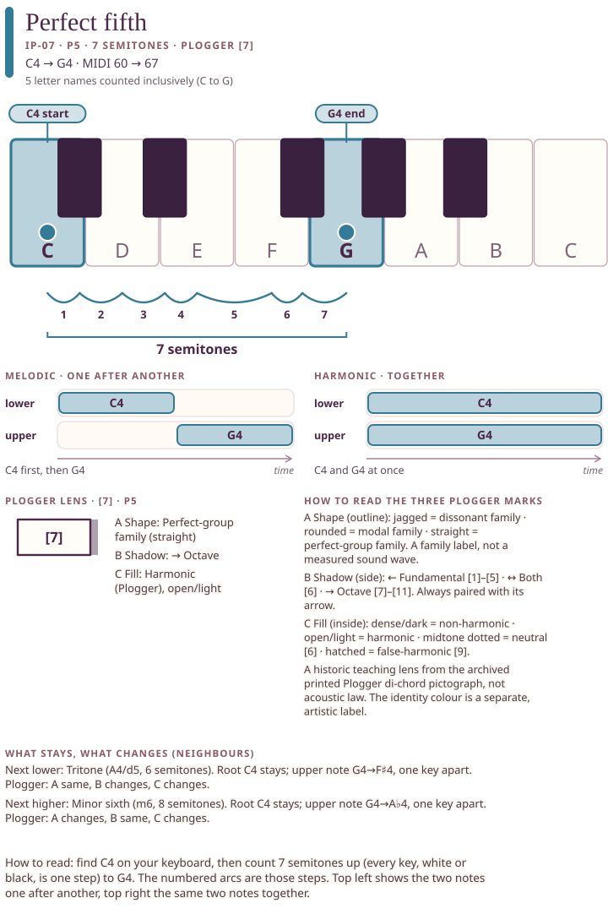
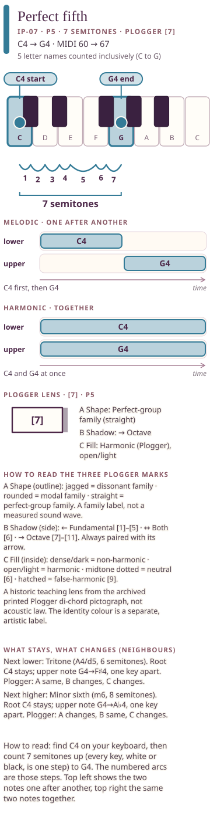
How to read it. Find C4 and count 7 keys up (white and black) to G4. The numbered arcs are those hops. The two time strips show the same two notes one after another (melodic) and together (harmonic). The three Plogger marks are a secondary historic lens.
On your own keyboard. Play C4, then G4, one after another, then together. Count the keys yourself, then notice what you hear without judging it good or bad.
Full source-authored chapter text (retained unchanged)
Meet the interval
A perfect fifth spans five letter positions C through G and seven semitones. It is a recognizable structural distance in many Western tonal settings.
As a moving melody
A fifth can be a bold call, a spacious leap or a familiar outline in a tune; volume and rhythm change its character.
Two notes together
Simultaneous C and G can blend comparatively well with many harmonically related instrument tones. A pure fifth is a 3:2 frequency ratio, but an equal-tempered fifth is only approximately that ratio.
In actual music
Use in drones, open fifths, bass/upper framing, melodic calls and wide synth voicings before adding thirds.
Listen and create
Hold C and compare upper F, G and C5. Hear perfect fourth, perfect fifth and octave while keeping the patch constant.
Paint What You Hear
Place two marks to frame a large area. Does the space suggest a horizon, doorway or something else?
Keep in mind
Perfect fifth does not imply a universal fixed emotional value or a complete major chord.
Actions
Hear together · Hear as a melody · Change register · Compare · Add to my soundscape (means copy note recipe, not send a DAW command).
IPV-18 · source IP-08 · identity #A95E86
Minor sixth (m6)
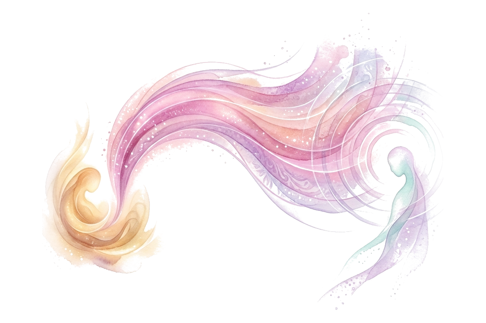
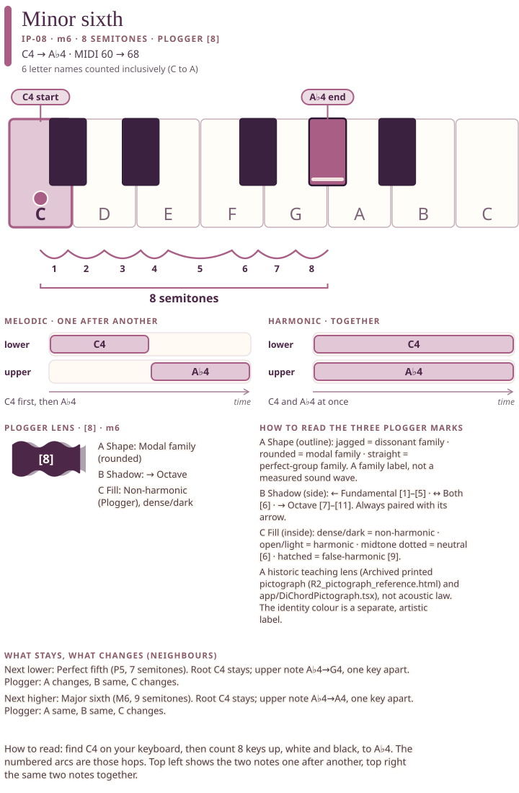
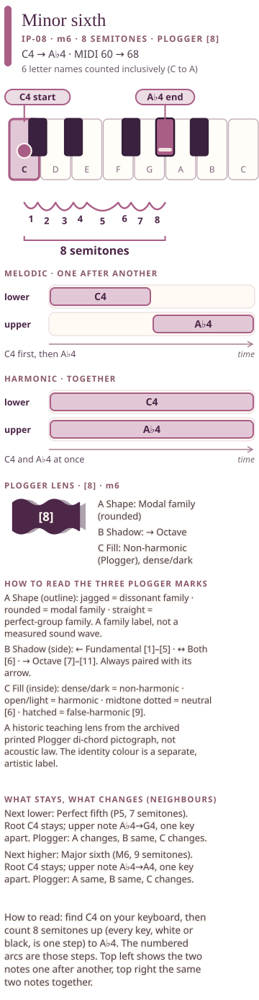
How to read it. Find C4 and count 8 keys up (white and black) to A♭4. The numbered arcs are those hops. The two time strips show the same two notes one after another (melodic) and together (harmonic). The three Plogger marks are a secondary historic lens.
On your own keyboard. Play C4, then A♭4, one after another, then together. Count the keys yourself, then notice what you hear without judging it good or bad.
Full source-authored chapter text (retained unchanged)
Meet the interval
From C to A-flat is six letter positions and eight semitones: a minor sixth. It spans more register than either kind of third.
As a moving melody
An ascending minor sixth can sound expressive, dramatic or gentle, depending on rhythm, phrase shape and which note came before it.
Two notes together
C and A-flat are a broad dyad whose chord role changes with the bass or added notes. The same pitch classes can be revoiced as a different interval.
In actual music
Try reflective leaps, wide pads, two-voice arrangements, register contrasts and inversions of a major third.
Listen and create
Play C4–A-flat4. Move the lower C up to C5 while leaving A-flat4 fixed: A-flat4–C5 is a major third, the inversion of a minor sixth.
Paint What You Hear
Draw the original wide span, then a smaller inverted space, using related colors to show common pitch classes.
Keep in mind
Minor sixth need not mean longing; wider does not automatically equal greater tension.
Actions
Hear together · Hear as a melody · Change register · Compare · Add to my soundscape (means copy note recipe, not send a DAW command).
IPV-19 · source IP-09 · identity #B47752
Major sixth (M6)
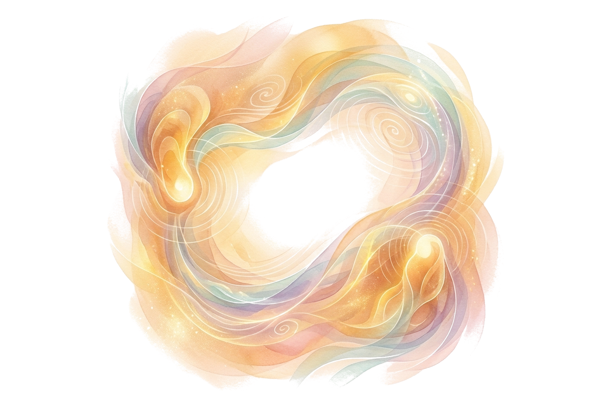
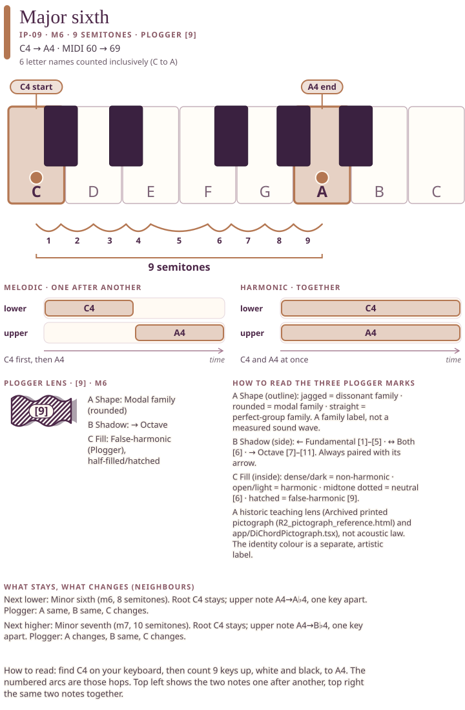
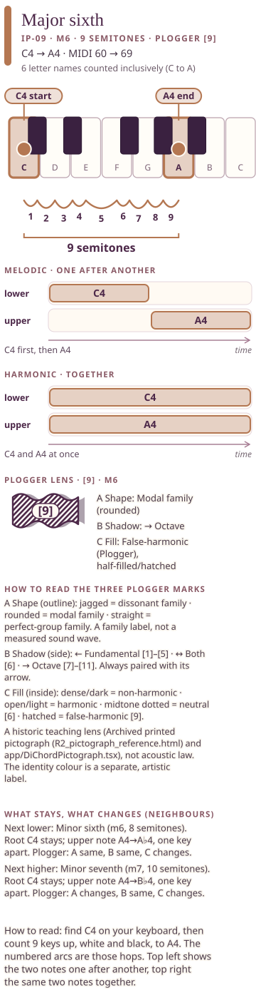
How to read it. Find C4 and count 9 keys up (white and black) to A4. The numbered arcs are those hops. The two time strips show the same two notes one after another (melodic) and together (harmonic). The three Plogger marks are a secondary historic lens.
On your own keyboard. Play C4, then A4, one after another, then together. Count the keys yourself, then notice what you hear without judging it good or bad.
Full source-authored chapter text (retained unchanged)
Meet the interval
A major sixth spans six letter positions and nine semitones. It is a wide but recognizable melodic distance.
As a moving melody
From C up to A can feel soaring or simply like a spacious change of position; a very quiet synth may make it intimate rather than dramatic.
Two notes together
Two notes a major sixth apart can add broad color. A changing bass or a third voice can give the pair a different harmonic role.
In actual music
Use for lyrical leaps, gentle upper voices, open pads, different registers and connections to minor-third material.
Listen and create
Compare C4–A4 (nine semitones) with A4–C5 (three semitones). Hear how inverting a major sixth creates a minor third.
Paint What You Hear
Make a wide visual journey and then a short return, using the same colors or different ones if that suits your experience.
Keep in mind
The interval does not carry a guaranteed uplifting or angelic quality independently of the music.
Actions
Hear together · Hear as a melody · Change register · Compare · Add to my soundscape (means copy note recipe, not send a DAW command).
IPV-20 · source IP-10 · identity #367C79
Minor seventh (m7)
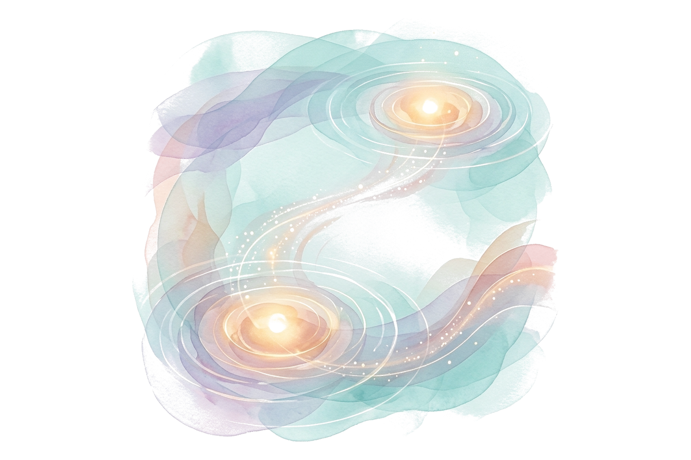
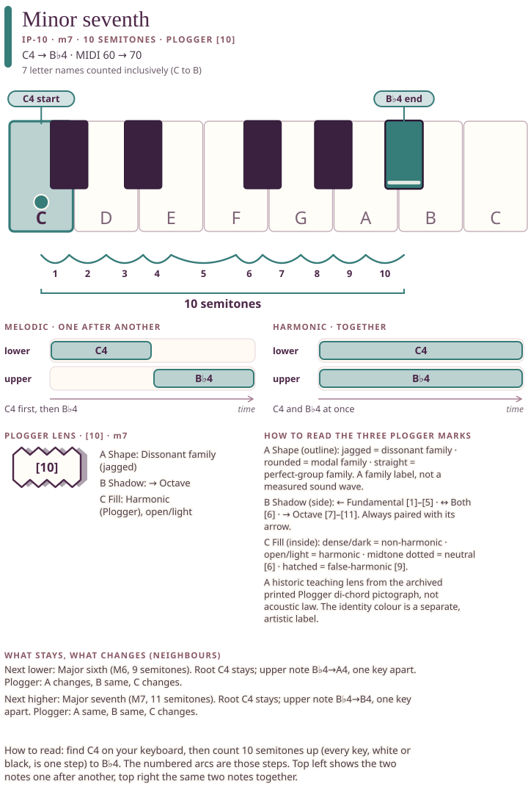
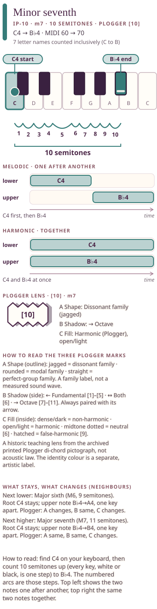
How to read it. Find C4 and count 10 keys up (white and black) to B♭4. The numbered arcs are those hops. The two time strips show the same two notes one after another (melodic) and together (harmonic). The three Plogger marks are a secondary historic lens.
On your own keyboard. Play C4, then B♭4, one after another, then together. Count the keys yourself, then notice what you hear without judging it good or bad.
Full source-authored chapter text (retained unchanged)
Meet the interval
C to B-flat is a seventh by note letters and ten semitones in pitch distance, one whole step below the next octave C.
As a moving melody
The leap can make a dramatic opening or a gentle high plateau; it depends on what happens before and after.
Two notes together
The minor seventh is present in many dominant- and minor-seventh chord structures, but a lone C–B-flat pair doesn't tell you which chord, key or function is active.
In actual music
Try modal atmosphere, a suspended upper note, layered seventh-chord color or wide melodic motion.
Listen and create
Hold C4 and compare B-flat4 with B4. The upper pitch moves a semitone, changing minor seventh to major seventh.
Paint What You Hear
Let two marks stretch nearly across an octave. Paint a small remaining gap to the next C, if you hear it as a destination.
Keep in mind
A minor seventh above C is not a universal request for resolution; another bass changes its role.
Actions
Hear together · Hear as a melody · Change register · Compare · Add to my soundscape (means copy note recipe, not send a DAW command).
IPV-21 · source IP-11 · identity #7978B3
Major seventh (M7)
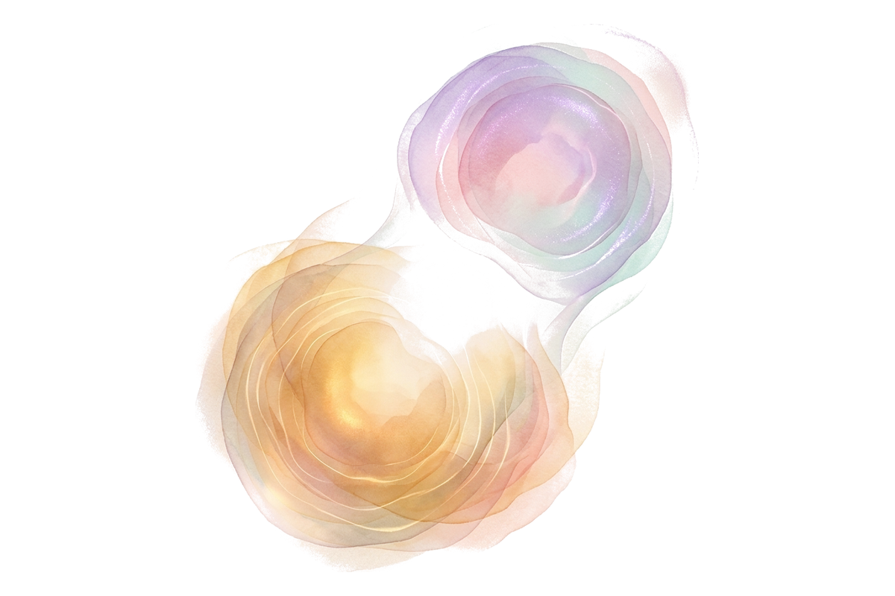
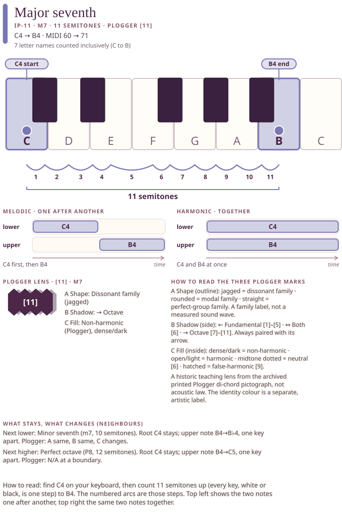
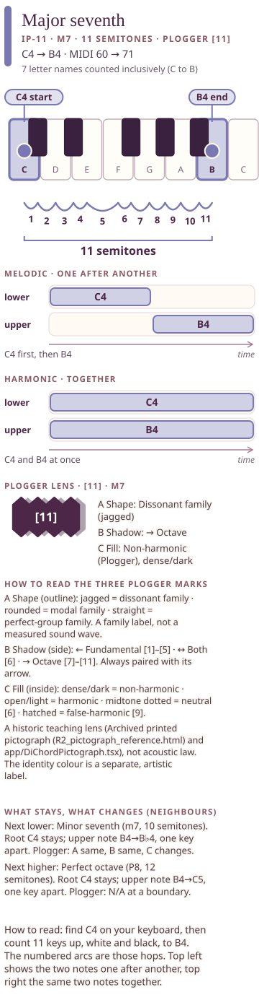
How to read it. Find C4 and count 11 keys up (white and black) to B4. The numbered arcs are those hops. The two time strips show the same two notes one after another (melodic) and together (harmonic). The three Plogger marks are a secondary historic lens.
On your own keyboard. Play C4, then B4, one after another, then together. Count the keys yourself, then notice what you hear without judging it good or bad.
Full source-authored chapter text (retained unchanged)
Meet the interval
A major seventh spans seven letter positions and eleven semitones. The upper B4 sits one neighboring key below C5.
As a moving melody
C4→B4 is a wide melodic leap. B4→C5 is a different, one-semitone melodic movement that often sounds like a leading-tone arrival in an established C-major context.
Two notes together
C4 and B4 held together can be an atmospheric interval; add E and G for a C-major-seventh chord. Its sonic roughness depends on actual timbres, voicing and dynamics.
In actual music
Use in extended pads, suspended upper-voice gestures, near-octave leaps and major-seventh chord colors.
Listen and create
Hear simultaneous C4+B4, then sequential B4→C5, then sequential C4→B4. Explain why those are distinct listening questions.
Paint What You Hear
Paint one point nearly reaching an upper destination, then paint what happens when the small final movement occurs.
Keep in mind
Do not conflate simultaneous major-seventh beating with psychological expectation of a sequential B→C resolution.
Actions
Hear together · Hear as a melody · Change register · Compare · Add to my soundscape (means copy note recipe, not send a DAW command).
IPV-22 · source IP-12 · identity #89845D
Perfect octave (P8)
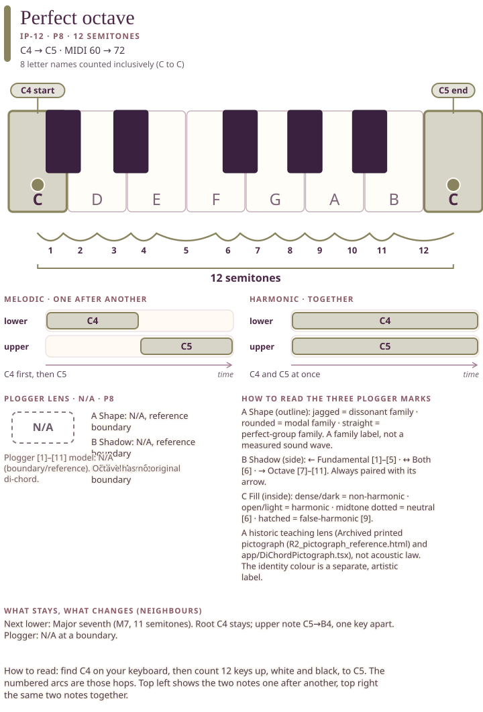
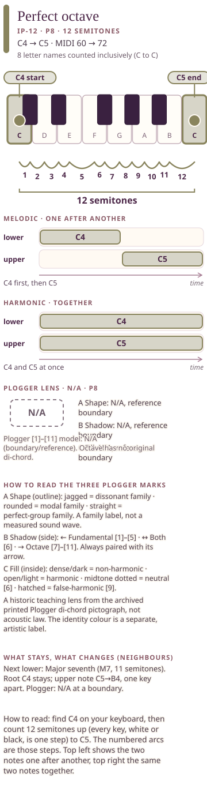
How to read it. Find C4 and count 12 keys up (white and black) to C5. The numbered arcs are those hops. The two time strips show the same two notes one after another (melodic) and together (harmonic). The three Plogger marks are a secondary historic lens; at the octave they are N/A.
On your own keyboard. Play C4, then C5, one after another, then together. Count the keys yourself, then notice what you hear without judging it good or bad.
The same letter name an octave higher: 12 semitones. Notes an octave apart share a letter name, not a pitch.
Full source-authored chapter text (retained unchanged)
Meet the interval
From C4 to C5 is twelve semitones and eight letter positions counted inclusively. Both pitches have the letter name C but occupy different registers.
As a moving melody
The octave leap can feel like enlarging a familiar musical idea, a return at another height or a new section of a phrase.
Two notes together
Simultaneous octave Cs often share a recognizable pitch identity. For pure tones, the higher frequency is double the lower, although the timbre and register still differ.
In actual music
Use for melody doubling across registers, wide pads, bass/high framing and clear changes of musical space.
Listen and create
Compare C4+C4 unison with C4+C5 octave, as melodic and simultaneous sounds. Which pair keeps both notes in the same register?
Paint What You Hear
Repeat a recognizable shape in a different area or size, allowing it to feel related but changed.
Keep in mind
Equal-tempered semitones are our starting map; not every musical tradition uses the same subdivisions.
Actions
Hear together · Hear as a melody · Change register · Compare · Add to my soundscape (means copy note recipe, not send a DAW command).